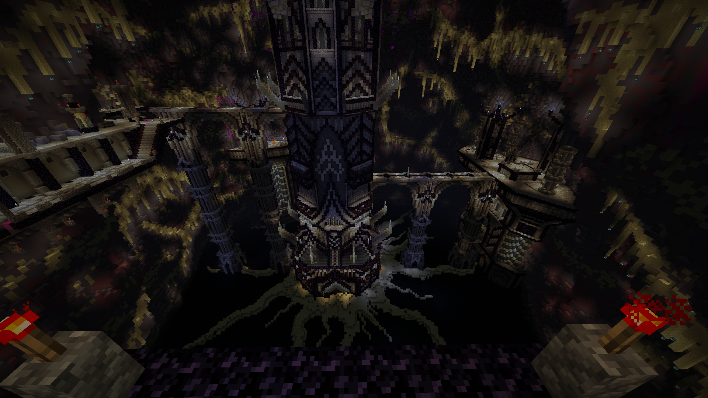

Map Author: DarthVid, Luisb1202 & ElRichMC
Origin: Map Link
Versions: MC = 1.16.5 - Map = 1.0.17
Presentation
Final Paradox is a full length CTM map. It was originally made in spanish, but after some time we were given a translated version for all to enjoy.
This map contains incredible scenarios, challenging enemies and unique mechanics. It has more than 40 hours of gameplay that you can enjoy alone or with friends.
Overview
Glacial Fort - White
It was a bit of a rough start with the natural spawns and weak gear. The second part where more gets introduced was solid, it’s nice to have a white wool actually be a snow area for once.
Sanctuary of Time - Monument
My biggest fear when I entered the monument ended up confirming itself later - it was too large, all of the utility being spread out so there was a lot of running. The elytra given to make it better was sadly too impractical most of the time. Also unsure how useful it is to have to keep the objectives as items since you don’t need to place them until near the end and you still get a bonus from picking them up, might as well just be collected by the helper.
On the other hand, it looks really impressive, and some of the utilities introduced are fantastic like the stygian forge or smuggler/skills.
Serious Buzzyness - Orange
There had incredible items to be found, the imp is sooo good, I can’t use any other offhand now that I got it. Thankfully I had the bane 3 hoe and would 1 tap all the bees and silverfish. Because of the mending, maybe they were too strong(along with the smite 3 sword) for having those this early, the nemesis enchants are too strong with spamclick.
Dragon Cult - Purple

The statue mechanic was cool as the first unique one of the map, although a bit annoying to type each word letter by letter. This is where I really started making use of the tome of conqueror and went full on ranged build with the cap.
Ouroboros Tower - Magenta

I was quite pleasantly surprised by the unique mobs, the endstone mechanic was kinda annoying and confusing when it happened. The first half wasn’t great.
Magneto-Gravity Wells - Light Blue

Light Blue is a collection of horribly cursed mob designs, especially the tnt phantom in open spaces(did you know they have a tendency to fly above your head?). I had the foresight to have a suitable build so avoiding most trouble with my strong ranged power. The gravity mechanic is fine, a bit jittery, sadly not used enough in interesting ways.
Nuclear Lab - Yellow

Tricky spawners used in interesting ways, and a really cool boss that made it worth using items. It was a great area all around, as well as making better use of the tnt phantoms with the level design.
Über RPSP - Lime
Once again with the cool special enemies, this time embracing level design even more. The nats were very numerous but it was more manageable with stronger gear. Too easy to miss the objective box. Having an attack on the monument was really nice, something rarely (if ever) done in maps yet so interesting.
Apiglo’s Palace - Pink

An interesting take on area mechanics, although it’s a bit annoying to deal with the janky mob follow AI. Thankfully the area is fairly easy and reaching the boss removes the trouble (and ranged build rocks). Funny boss, although I was baited into thinking I could spare him.
Horror’s Zenith - Gray
Cool puzzle area with fairly basic combat. Wasn’t entirely sure how it worked at first, but I managed in the end, you could make a stand out of this. Kinda disappointed that breaking over 12h was hinted at but not actually doable(it loops back). New imp is amazing!
Last Magma Foundry - Light Gray
This area is chaos, the vents mechanic sucked majorly, with not enough spots to refill so you’d always asphyxiate if you didn’t perfectly evade the smoke. The forge puzzle was interesting although a bit too obscure, I needed the hint.
Serpent Corpse - Cyan

This is the inescapable murky jungle area with loads of nat spawns. I found the mechanic more interesting and less restricting than the vents. Overall pretty fun, as well as the boss, never expected I’d play volleyball in minecraft one day. Inventory management does suffer here, more maps should edit drops.
Cosmic Town - Brown
The perfect change of pace compared to the intense cyan. Simple paths and combat, with periodical trouble. A new stronger imp is there too! The meteor shower wasn’t super interesting because it’s just stopping the gameplay for a while.
Not Heavenly Skies - Blue
A fun playground to use all the various ranged weapons like the scythe, gun, pickarang, thunderbow, bastion spellbook. The puzzle is also enjoyable.
Workshop Of The Makers - Green
Also very enjoyable, with swarms of zombies all the time, perfect to use aoe weapons. The enhanced turrets are a good design twist and the boss once again manages to change the paradigm in a fun manner. At that point, clearing out paths isn’t that worth and it’s simpler to jump around.
The Immortal Bastion - Red
It had a rough start with absolute chaos and mob spam, not the best way to introduce the mechanic. Thankfully I could adapt fairly well after that, mostly running in the outside parts to fight at a more reasonable pace once the spawners are a bit more delayed. At that point the best items are available, so the gear is complete. The boss was suited for me, although the intermission phase was frustrating to see where it was safe, managed after some failures.
Paradox Citadel - Black
The mobs were so tanky(might I suggest removing armor values to have only health), it was more interesting to run around and only fight when needed. Inventory always cluttered from random stuff exploding, although at that point there was no loot worth thinking about. The finale was amazing.
Conclusion
The level design has entropy syndrome with a lot of the standard gameplay being spawner roads and not enough long range spawners, also having a fair chunk of dead spaces(no content). It counteracts that by having quite impressive custom mechanics, items, and enemies. The forging mechanic especially was fun and gave reasons to explore since each item felt worth using.
The loot balance was all over the place, with most of the gear being often obsolete due to either forging or a previous area. Finding early enchanted books but no anvil for a while, I think those were the most useless part of the loot for the whole map to be honest. Maybe due to forging, it would’ve been worth focusing more on basic supplies(instead of finding unenchanted netherite hoes in black). The infinite caves were good to avoid annoying grind though.
For the aesthetics, I have no complaints, with only two areas that were really unpleasant in gameplay at times (light blue and light gray). The story was fairly cookie cutter, but it was good enough to fill the adventure and give an extra something for each area.
I didn’t have the will to note every typo or missing translation, but maybe some extra QA could help - there weren’t that many, but still enough to be noted, although I’m thankful having it be translated at all. The mechanical prowess of this map really blew me away, some of these things I couldn’t even dream being possible in minecraft, and yet.
It’s rare to have big maps with production value like that, so each should be savored. Highly worth playing.